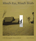

The focus of American
Civilization, edited by Allen F. Davis, is American cultural
history. In keeping with the interdisciplinary work in this field,
which characteristically brings together art history, literary history
and theory, and material culture, the titles in this series cover
diverse aspects of American experience—from attitudes toward
death to twentieth-century design innovations to images of country
life in art and letters to trade unions' reliance on religious discourse.
The series has been a pioneer in presenting work that uses photographs
as historical documents and from its inception has been firmly committed
to women's studies. As the first university press series in the
field, American Civilization provided the inspiration and
the standard for much of the interdisciplinary work developing in
the contemporary academy. |
 |
Death
in the Dining Room and Other Tales of Victorian Culture
Ames, Kenneth L.
280 pp • 8.5x11 • Spring 1992
paper 978-1-56639-333-1
cloth 978-0-87722-891-2
Excerpt available |
|
Saving
the Waifs
Ashby, LeRoy
Spring 1984
cloth 978-0-87722-337-5 |
 |
Social
Darwinism
Science and Myth in Anglo-American Social Thought
Bannister, Robert C.
Revised Edition
292 pp • Fall 1988
paper 978-0-87722-566-9
cloth 978-0-87722-155-5
Excerpt available |
 |
Paths
into American Culture
Burnham, John C.
Fall 1987
cloth 978-0-87722-505-8 |
 |
Pastoral
Inventions
Rural Life in Nineteenth-Century American Art and Culture
Burns, Sarah
392 pp • 9x7.5 • Spring 1989
cloth 978-0-87722-580-5 |
 |
Mind's
Eye, Mind's Truth
FSA Photography Reconsidered
Curtis, James
160 pp • 9x10 • Fall 1989
paper 978-0-87722-823-3
cloth 978-0-87722-627-7 |
 |
Trade
Union Gospel
Christianity and Labor in Industrial Philadelphia, 1865-1915
Fones-Wolf, Ken
260 pp • Fall 1989
cloth 978-0-87722-652-9 |
 |
Mary
Heaton Vorse
The Life of an American Insurgent
Garrison, Dee
400 pp • Spring 1989
paper 978-0-87722-781-6
cloth 978-0-87722-601-7 |
|
Silver
Cities
The Photography of American Urbanization, 1839-1915
Hales, Peter Bacon
315 pp • Fall 1983
paper 978-0-87722-399-3
cloth 978-0-87722-299-6 |
 |
Fred
Allen's Radio Comedy
Havig, Alan
296 pp • Fall 1990
paper 978-0-87722-810-3
cloth 978-0-87722-713-7 |
 |
Before
It's Too Late
The Child Guidance Movement in the United States, 1922-1945
Horn, Margo
260 pp • Spring 1989
cloth 978-0-87722-589-8 |
 |
Twentieth
Century Limited
Industrial Design in America, 1925-1939
Meikle, Jeffrey L.
Second Edition
264 pp • 7x10 • Spring 2001
paper 978-1-56639-893-0
cloth 978-1-56639-892-3
Excerpt available |
 |
A
Woman's Ministry
Tucker, Cynthia Grant
Fall 1984
cloth 978-0-87722-338-2 |
 |
Life
After Death
Widows in Pennsylvania, 1750-1850
Wilson, Lisa
192 pp • Fall 1991
cloth 978-0-87722-883-7 |